Лабораторная работа 13.
Комплексная защита электронной почты и документооборота
Цель работы: изучить методы комплексного построения системы защиты электронной почты и документооборота.
Теоретическая часть
Общие сведения о процедурах защиты электронной почты:
Для понимания системы мероприятий комплексной защиты электронной почты важно ясно представлять структуру объекта защиты информации и характер информационных связей и взаимодействий, лежащих в основе электронного документооборота.
Пользователь, работающий с электронной почтой, оперирует традиционными понятиями и объектами: адрес, конверт, вложения, почтовый ящик и т.д. Что такое электронное письмо? Это, прежде всего, файл. Давайте посмотрим, что скрывается за понятной всем иконкой электронного письма (рисунок 1).
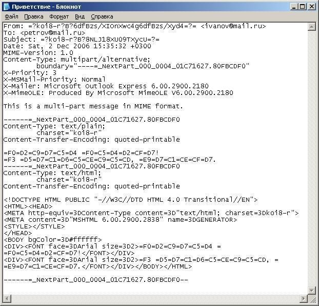
Рисунок 1 – Текстовый файл электронного письма
Перед нами обыкновенный текстовый файл. В действительности ему соответствует следующее электронное письмо (рисунок 2).
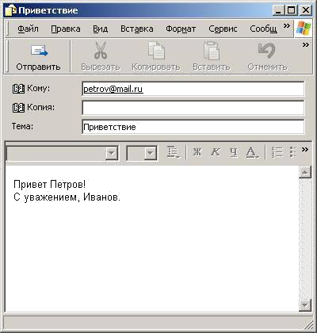
Рисунок 2 – Текст электронного письма
Из этого можно сделать вывод, что электронное письмо, в привычном для нас понимании, есть результат интерпретации текстового файла клиентской программой системы электронной почты. В действительности система электронной почты оперирует файлами. Значит,
защита электронной почты опирается на рассмотренную ранее типовую задачу защиты сетевой файловой системы.
В небольших компаниях система электронной почты может быть построена на основе файловой системы. Например, по такому пути пошли при реализации электронной почты в операционных системах семейства Unix. В специальной папке на сервере хранятся файлы, имена которых соответствуют пользователям системы электронной почты. Фактически для реализации полноценной системы электронной почты нам необходима программа доставки электронных сообщений в почтовые ящики, пользователь и редактор сообщений электронной почты для работы с ними.
Далее на схеме представлена структура объекта защиты информации с расположением его элементов в одной из возможных зон (рисунок 2.3).
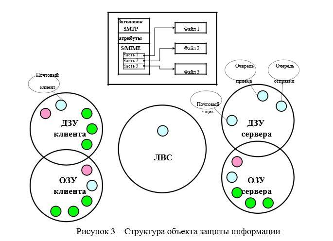
Рисунок 3 – Структура объекта защиты информации
Такое широкое присутствие объекта защиты и его элементов в различных зонах во многом определяет сложность задачи комплексной защиты системы электронной почты. Недостатком такого подхода является то, что для успешной доставки электронного послания необходимым условием является активность средств электронной почты получателя. Если компьютер получателя не работает – электронная почта не будет доставлена. Поэтому разработчики системы электронной почты пошли по другому пути. Они разделили задачи доставки и получения почты и сделали их независимыми. В небольшой организации все перечисленные роли (таблица 1) могут быть закреплены за единственным сервером.
Таблица 1 – Основные функции сервера электронной почты
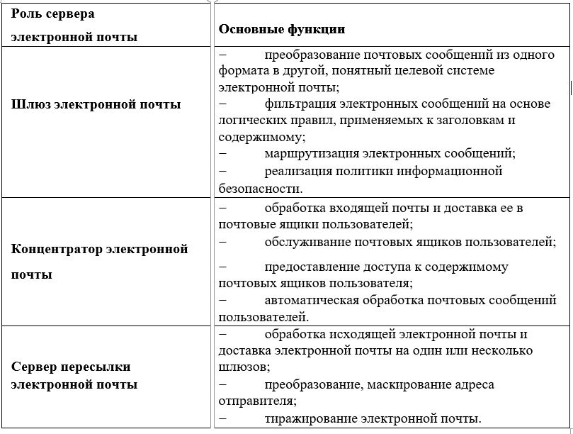
В системе электронной почты можно выделить три типа информационных взаимодействий, представленных в таблице 2.2.
Таблица 2 – Типы информационных взаимодействий в системе электронной почты
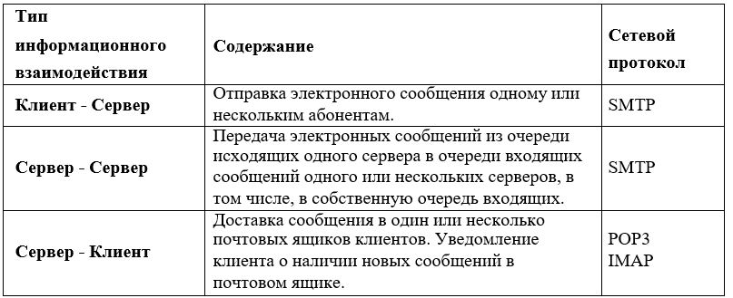
Обратимся теперь к схеме комплексной защиты электронной почты (рисунок 4).
Для того чтобы упростить изучение системы защиты электронной почты, выполним декомпозицию на относительно самостоятельные контуры защиты.
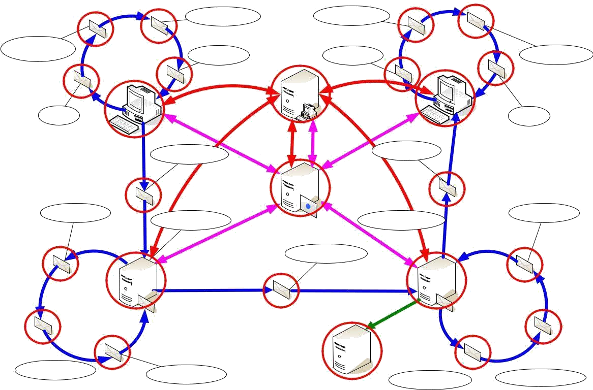
Рисунок 4 – Схема комплексной защиты электронной почты
Реализация контуров защиты электронной почты:
Первый контур защиты соответствует типу взаимодействия «клиент- сервер» (рисунок 5). Дадим характеристику дестабилизирующим воздействиям на зоны и средствам противодействия им.
Типовые нападения на зону ДЗУ клиента электронной почты:
утечка классифицированной информации – наступает вследствие переноса информационных ресурсов из объектов файловой системы в объекты электронной почты, в отсутствии согласованных мер по защите информации;
хищение баз данных электронной почты – хищение носителя с базой данных электронной почты или несанкционированное копирование базы данных электронной почты на носитель злоумышленника позволяет обойти встроенные функции защиты, реализуемые операционной системой и программным обеспечением электронной почты, в отсутствии дополнительных мер и средств защиты информации;
хищение адресных справочников электронной почты – хищение элементов информационного обеспечения программ электронной почты, в которых хранится информация об известных адресах электронной почты; широкая доступность подобной информации стала причиной одного из негативных явлений сегодняшних дней – рассылки нежелательной корреспонденции (спама).
Типовые нападения на зону ОЗУ клиента электронной почты
(рисунок 6):
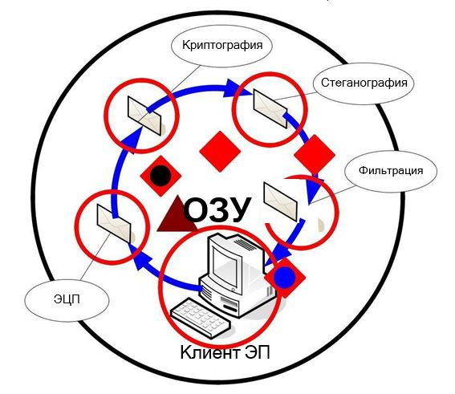
Рисунок 6 – Типовые нападения на зону ОЗУ клиента
электронной почты
утечка классифицированной информации – наступает в процессе обработки электронной корреспонденции в оперативной памяти;
перехват электронной почты в оперативной памяти – основная цель нападения - получить доступ к содержимому электронной корреспонденции до того времени, как она будет защищена криптографическими средствами операционной системы или прикладного программного обеспечения.
В зоне ОЗУ реализуются следующие рубежи защиты:
рубеж защиты, образованный средствами операционной системы, выступает как фундамент для дополнительных рубежей: ЭЦП (электронная цифровая подпись), криптография, стеганография, фильтрация.
электронная цифровая подпись служит для подтверждения авторства сообщения электронной почты и контроля его целостности;
криптографическое преобразование позволяет надежно защитить информацию при передаче ее по открытым каналам связи;
стеганография скрывает сам факт передачи информации, маскируя защищенную почтовую связь под малоинтересную переписку обывателей;
5) средства фильтрации почтовых сообщений, позволяют блокировать случайную или намеренную отправку классифицированной информации на основе анализа атрибутов и содержания почтового сообщения. Порядок прохождения рубежей может быть произвольным.
Типовые нападения на зону ЛВС, связывающую компьютер клиента электронной почты с сервером электронной почты
(рисунок 7):
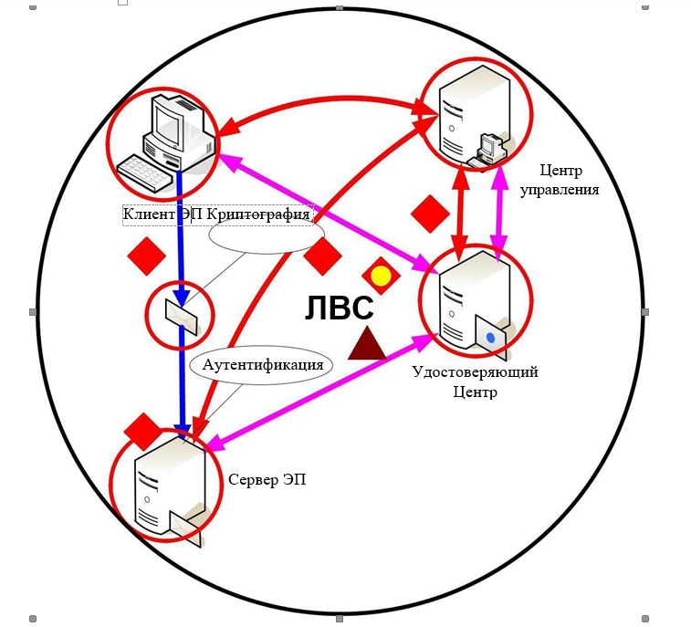
Рисунок 7 – Типовые нападения на зону ЛВС
1) перехват реквизитов доступа к системе электронной почты – цель: путем перехвата сетевых пакетов, относящихся к сеансу работы электронной почты, выделить или восстановить реквизиты доступа к интерфейсу системы электронной почты с тем, чтобы в дальнейшем злоумышленник мог осуществлять манипуляции с электронной корреспонденцией от лица санкционированного пользователя;
перехват электронной почты – восстановление сообщений электронной почты из перехваченного сетевого трафика в отсутствии надежных средств криптографической защиты информации;
перехват сеанса электронной почты – цель: получить контроль над сеансом почтовой сессии путем подавления средств электронной почты сервера или клиента, с последующим продолжением сеанса средствами злоумышленника.
исчерпание ресурсов сервера электронной почты – отказ в обслуживании – цель: путем создания многочисленных сессий электронной почты или многократной посылки почтовых сообщений в один или более почтовых ящиков исчерпать вычислительные ресурсы сервера и нарушить нормальное функционирование системы электронной почты;
подделка электронной почты – цель: имитация отправки сообщения от имени другого пользователя электронной почты;
подделка ЭЦП сервера или клиента – основанный на явлении коллизий хэш-функций, лежащих в основе постановки электронной цифровой подписи на электронное сообщение, подбор содержания сообщения злоумышленником, в отношении которого проверка ЭЦП дает положительный результат;
компрометация ЭЦП сервера или клиента – раскрытие секретных ключевых параметров ЭЦП сервера или клиента, позволяющее проставлять цифровую подпись на произвольных сообщениях от лица владельца скомпрометированной ЭЦП.
подавление средств защиты электронной почты – использование ошибок реализации или конфигурации средств защиты, позволяющих временно или полностью вывести их из строя. Наиболее подвержены подобным нападениям прицепные, присоединенные средства защиты, или средства защиты, задействуемые по требованиям;
распространение вредоносного программного обеспечения – использование функциональных средств электронной почты для внедрения программных закладок в ОЗУ или ДЗУ компьютера получателя электронной корреспонденции, как правило, в процессе ее получения или прочтения;
распространение нежелательной корреспонденции– злоупотребление механизмами тиражирования электронной почты для увеличения эффекта информационного воздействия, как правило, в целях рекламы;
использование уязвимостей программного обеспечения электронной почты – использование ошибок прикладного программного
обеспечения электронной почты для получения контроля над компьютером, где оно выполняется.
Основные рубежи защиты образуются средствами сетевых операционных систем на каждом из сетевых узлов. В результате согласованного взаимодействия криптографических средств сетевых узлов образуется рубеж защиты на этапе передачи информации в сети.
Криптографическая защита электронной почты может реализовываться:
взаимодействием криптографических средств программного
обеспечения электронной почты;
взаимодействием криптографических средств операционных систем
клиента и сервера электронной почты;
аппаратно-программными средствами межсетевых экранов и
телекоммуникационного оборудования.
целях раннего обнаружения и предупреждения нападений на систему электронной почты в зоне ЛВС располагаются сенсоры сетевой системы обнаружения вторжений. Сенсоры могут располагаться непосредственно в сети, осуществляя прослушивания всего сетевого трафика
на предмет признаков угроз системам электронной почты, или же внедряться сетевые компоненты операционных систем узлов электронной почты.
Контроль над распространением электронной почты возлагается на
средства межсетевых экранов и телекоммуникационного оборудования.
На зону ОЗУ сервера осуществляются следующие типовые нападения:
перехват электронной почты в оперативной памяти
навязывание электронной почты в оперативной памяти обход фильтров электронной почты
навязывание маршрутизации электронной почты
В ОЗУ сервера реализуются следующие рубежи защиты
(рисунок 8):
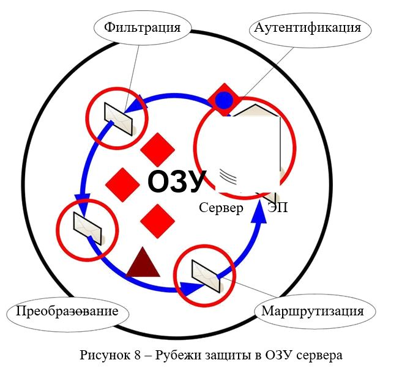
Основной рубеж образуют встроенные средства системного и прикладного программного обеспечения операционной системы сервера и электронной почты. Важнейшие функции: аутентификация и криптографическая защита канала передачи данных.
На основе вышеописанного рубежа реализуются дополнительные рубежи: фильтрация, преобразование, маршрутизация.
Рубеж фильтрации предназначен для борьбы с утечкой классифицированной информации, с распространением вредоносного программного обеспечения и нежелательной корреспонденции, он также участвует в реализации политики управления информационными потоками.
Рубеж преобразования на основе системы правил выполняет модификацию заголовков и содержимого электронного сообщения. Задача данного рубежа скрыть внутреннюю структуру организации, замаскировать каналы обмена информацией, реализовать централизованную криптографическую защиту сообщений электронной почты.
Рубеж маршрутизации выполняет основную работу по управлению информационными потоками. Именно здесь принимаются решения об отправке электронной почты по защищенному или открытому каналу связи.
Дополнительной задачей рубежа является реализация отказоустойчивости за счет использования избыточных каналов связи.
На зону ДЗУ сервера электронной почты осуществляются следующие нападения:
перехват электронной почты в очереди на отправку; навязывание электронной почты в очередь на отправку.
Переходим к описанию следующего контура защиты. Данный контур
описывает защиту взаимодействия «сервер-сервер» (рисунок 9).
Типовыми нападениями на зону ЛВС, связывающую два сервера электронной почты, являются:
изменение топологии, архитектуры системы электронной почты – цель: воздействуя на средства управления системой электронной почты, изменить топологию информационных связей наиболее выгодным для намерений злоумышленника образом;
сокрытие фактов нападения на систему электронной почты – цель: воздействуя на средства управления (средства регистрации событий) скрыть источник нападения или сам факт нападения на систему электронной почты имитация ошибок сеанса обмена электронными сообщениями
– цель: воздействуя на сервер-отправитель, сымитировать ситуацию
«неполучения» электронной корреспонденции;
дезавуирование абонентов электронной почты – цель: используя служебные функции сервера-получателя, выяснить состав обслуживаемых сервером абонентов, получить список адресов электронной почты сервера- получателя;
ложный сервер-отправитель – цель: имитировать сеанс отправки сообщения с санкционированного сервера-отправителя, при активном подавлении последнего;
ложный сервер-получатель – цель: имитировать сеанс приема сообщения санкционированным сервером-получателем, при активном подавлении последнего;
подмена сообщений электронной почты – цель: используя контролируемые телекоммуникационные средства, блокировать отправленное сообщение, и, используя его реквизиты почтовой сессии, навязать сообщение злоумышленника;
перехват сообщений электронной почты – цель: путем прослушивания сетевого трафика захватить сетевые пакеты сеанса электронной почты и восстановить почтовые сообщения, переданные в ходе него;
блокирование сообщения электронной почты – цель: с помощью служебных сообщений электронной почты или подконтрольного злоумышленнику телекоммуникационного оборудования, нарушить штатную работу электронной почты, сделать невозможным электронный документооборот.
В результате взаимодействия криптографических средств защиты сетевых операционных систем, межсетевых экранов и телекоммуникационного оборудования образуется рубеж криптографической защиты.
Против зоны ОЗУ сервера-получателя применяются следующие типовые нападения:
использование служебных функций электронной почты – цель: сбор информации о системе электронной почты, организация атак типа
«отказ в обслуживании», использование изъянов программного обеспечения
его конфигураций;
похищение услуг, сервисов электронной почты – цель: используя изъяны конфигурации программного обеспечения и средств защиты сервера-получателя, вынудить выполнить его дополнительные функции, например, пересылку или тиражирование почты, автообработку почтового сообщения, ввод информации в базу данных и т. п.
3) обход фильтров электронной почты – цель: с помощью криптографических или специальных преобразований затруднить или сделать полностью неэффективной работу фильтров сервера получателей, реализующих политику управления информационными потоками или политику информационной безопасности.
Функциональное назначение рубежей защиты для сервера-получателя зеркально-симметрично аналогичным рубежам сервера-отправителя.
Основной рубеж образуют встроенные средства системного и прикладного программного обеспечения операционной системы сервера и электронной почты. Важнейшие функции: аутентификация и криптографическая защита канала передачи данных.
На основе вышеописанного рубежа реализуются дополнительные рубежи: фильтрация, преобразование, маршрутизация.
Рубеж фильтрации предназначен для борьбы с навязыванием ложной информации, с распространением вредоносного программного обеспечения и нежелательной корреспонденции, он также участвует в реализации политики управления информационными потоками.
Рубеж преобразования на основе системы правил выполняет модификацию заголовков и содержимого электронного сообщения. Задача данного рубежа - скрыть внутреннюю структуру организации, замаскировать каналы обмена информацией, реализовать централизованную криптографическую защиту сообщений электронной почты.
Рубеж маршрутизации выполняет основную работу по управлению информационными потоками. Именно здесь принимаются решения о доставке электронной почты на тот или иной концентратор электронной
почты. Дополнительной задачей рубежа является реализация отказоустойчивости за счет использования избыточных каналов связи.
Против зоны ДЗУ сервера-получателя реализуются следующие нападения:
навязывание электронной почты в почтовых ящиках пользователей – цель: используя прямой доступ к базе данных концентратора электронной почты, навязать в почтовый ящик одного или более пользователей сервера сообщения электронной почты. Наибольшую угрозу этот вид нападения представляет для крупных серверов электронной почты, например, серверов, обслуживающих системы mail.ru, yandex.ru и
т.п.;
перехват электронной почты в почтовых ящиках пользователей
– цель: используя прямой доступ к базе данных концентратора электронной почты или к файлам базы данных, восстановить сообщения отдельных пользователей с последующей передачей на компьютер злоумышленника;
перехват электронной почты в очереди полученных сообщений
– цель: используя прямой доступ к файлам и папкам концентратора электронной почты или механизмы межпроцессного взаимодействия, получить доступ к сообщениям электронной почты;
навязывание электронной почты в очереди полученных сообщений – цель: используя прямой доступ к файлам и папкам концентратора электронной почты или механизмы межпроцессного взаимодействия, навязать сообщения электронной почты, которые в дальнейшем будут подвергнуты штатной обработке средствами программного обеспечения электронной почты.
Защита электронной корреспонденции в зоне ДЗУ осуществляется криптографическими средствами операционных систем и программного обеспечения электронной почты, а также средствами контроля целостности.
Последний контур защиты описывает взаимодействие «сервер-клиент». В дополнение к рассмотренным выше нападениям на зону ОЗУ сервера- получателя в контексте данного контура защиты воздействует доступ к интерфейсу почтового ящика в оперативной памяти – в стандартных серверах электронной почты функции работы с почтовым ящиком сгруппированы в одну библиотеку, с помощью специальной собранной программы можно посредством данной библиотеки обратиться к почтовому ящику и выполнить манипуляции с ним
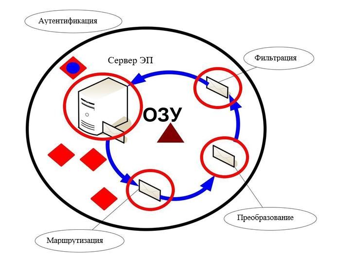
На зону ДЗУ сервера получателя дополнительно воздействует угроза прямого доступа к носителю с почтовым ящиком пользователя.
К зоне ОЗУ клиента-получателя применяются следующие типовые нападения (рисунок 2.14):
внедрение вредоносного программного обеспечения – цель: используя средства автоматической обработки почтовых сообщений программным обеспечением клиента электронной почты, внедрить в программную среду клиента программные закладки (вредоносное программное обеспечение);
подмена почтового сообщения в оперативной памяти – цель: заменить содержание почтового сообщения, полученного с сервера, содержимым сообщения злоумышленника путем модификации участка программного кода, ответственного за этот этап прохождения электронной почты;
навязывание почтового сообщения в оперативной памяти – цель: воздействуя на структуры динамической памяти, навязать сообщение электронной почты, имитируя его прием в текущей почтовой сессии.
Основные средства защиты клиента-получателя: встроенные средства операционной системы и программного обеспечения электронной почты, антивирусные программные средства, средства контентной фильтрации.
Против зоны ДЗУ сервера резервного копирования существуют следующие типовые нападения:
доступ к электронной почте на резервном носителе информации
– цель: хищение или несанкционированное копирование носителя информации с резервной копией сообщений электронной почты;
навязывание электронной почты на резервный носитель информации – цель: путем замены или модификации носителя с резервной копией сообщений электронной почты и последующим инспирированием сбойной ситуации, добиться восстановления навязанной информации на сервере электронной почты.
Основные средства защиты информации: средства контроля целостности и криптографической защиты носителей с резервной копией.
Зоне ОЗУ сервера резервного копирования угрожают следующие типовые нападения:
использование уязвимостей системы резервного копирования
– цель: воздействуя на ошибки программного обеспечения и изъяны конфигурации получить контроль над сервером резервного копирования;
резервное копирование с ложного сервера – цель: подавляя средства резервного копирования санкционированного сервера, выполнить
резервное копирование ложной информации на сервер резервного копирования с последующей инспирацией сбойной ситуации и восстановления с навязанной резервной копии;
восстановление на ложный сервер – цель: хищение сообщений электронной почты путем имитации сбоя на санкционированном сервере электронной почты и последующего перехвата сеанса восстановления информации из резервной копии, с подавлением санкционированного сервера электронной почты;
перехват электронных сообщений в оперативной памяти – цель: с помощью программной закладки получить доступ к электронным сообщениям в оперативной памяти сервера резервного копирования на этапе подготовки к сохранению на резервном носителе информации.
Для отражения этих нападений в зоне ОЗУ сервера резервного копирования создаются рубежи защиты, представленные на рисунке
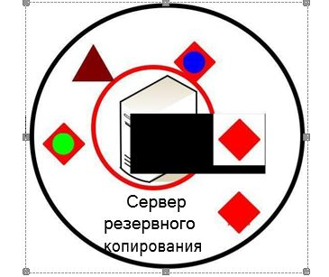
В реализации рубежа защиты сервера резервного копирования участвуют встроенные средства защиты операционной системы и программного обеспечения системы резервного копирования.
Для зоны ЛВС, связывающей клиента, сервер электронной почты и сервер резервного копирования, характерны следующие типовые нападения:
перехват электронной почты – цель: восстановить сообщения электронной почты из перехваченных сетевых пакетов сеансов взаимодействия клиента с сервером электронной почты;
перехват реквизитов доступа к почтовому ящику – цель: извлечение или восстановление реквизитов доступа санкционированного пользователя к содержимому почтового ящика;
распространение вредоносного программного обеспечения – цель: используя средства автоматической обработки входящей электронной почты, внедрить программные закладки, вредоносное программное обеспечение в программную среду компьютера клиента системы электронной почты;
распространение нежелательной корреспонденции – цель: использование ставшего известным злоумышленнику адреса электронной почты для доставки адресного информационного воздействия пользователю электронной почты;
ложный сервер – цель: активно подавляя санкционированный сервер электронной почты, похитить реквизиты доступа у клиента электронной почты или же навязать ему электронную почту злоумышленника;
ложный клиент – цель: активно подавляя санкционированного клиента, воспользоваться его почтовой сессией для доступа к информации почтового ящика.
Взаимодействие встроенных средств защиты операционных систем и программного обеспечения электронной почты и резервного копирования образуют криптографические рубежи защиты информации в сети. Стойкость данных рубежей может быть усилена привлечением аппаратно-программных средств межсетевых экранов и телекоммуникационного оборудования.
Управление криптографическими средствами защиты информации осуществляется на основе инфраструктуры открытого ключа с помощью общего удостоверяющего центра.
Применение криптографии с открытыми ключами для обеспечения информационной безопасности:
Криптографические алгоритмы используются для шифрования открытого текста (plaintext) с использованием ключа шифрования (encryption key), в результате чего получаются зашифрованные данные (ciphertext).
Зашифрованный по надежному криптографическому алгоритму текст практически невозможно расшифровать без дополнительных данных, которые называются ключом расшифрования (decryption key).
В криптографии с симметричными ключами (symmetric key) для шифрования и расшифрования используется один и тот же секретный ключ (secret key), то есть ключ шифрования совпадает с ключом расшифрования. Стороны могут передавать друг другу данные, зашифрованные секретным ключом, только после того, как они обменяются этим общим ключом.
При шифровании с открытым ключом у каждого пользователя должно быть два ключа – открытый (public) и личный (private) – секретный ключ. Если открытый ключ сделать общедоступным, пользователи смогут отправлять вам зашифрованные с его помощью данные, которые только Вы будете способны расшифровать с помощью своего личного секретного ключа. С помощью личного ключа Вы также можете преобразовать отправляемые данные таким образом, что пользователи смогут удостовериться в том, что эти данные были отправлены именно вами, а не кем-то другим. Эта возможность служит основой цифровых подписей.
Различие ключей – открытого и личного – в криптографии с открытыми ключами позволило создать следующие технологии: электронные цифровые подписи, распределенная проверка подлинности, согласование общего секретного ключа сессии, шифрование больших объемов данных без предварительного обмена общим секретным ключом.
Создание и проверка электронных цифровых подписей (digital signature) – это, вероятно, самый интересный аспект криптографии с
открытыми ключами. Основой электронной цифровой подписи является математическое преобразование подписываемых (signed) данных с использованием личного секретного ключа и выполнением следующих условий:
создать электронную цифровую подпись можно только с использованием личного секретного ключа;
проверить действительность электронной цифровой подписи может любой, имеющий доступ к соответствующему открытому ключу;
любое изменение подписанных данных (даже изменение всего одного бита в большом файле) делает электронную цифровую подпись недействительной.
Криптография с открытыми ключами обеспечивает надежные службы распределенной аутентификации.
Технология шифрования с открытым ключом позволяет шифровать большие объемы данных в том случае, если у обменивающихся информацией сторон нет общего ключа.
В настоящее время наиболее часто используются сертификаты на основе стандарта Международного союза телекоммуникаций ITU-T X.509 версии 3 и рекомендаций IETF (Internet Engineering Task Force) RFC 2459.
Это базовая технология, используемая в инфраструктуре открытых ключей операционной системы Windows 2000. Это не единственный вид сертификатов. Например, система защиты сообщений электронной почты PGP (Pretty Good Privacy) использует свою специфическую форму сертификатов.
Центр сертификации (ЦС) – это служба, которая выдает сертификаты. Центр сертификации является гарантом связи между открытым ключом субъекта и содержащейся в сертификате информацией по идентификации этого субъекта. Различные ЦС устанавливают и гарантируют эту связь различными способами, поэтому прежде чем доверять сертификатам того или иного ЦС, следует ознакомиться с его политикой и регламентом.
Включенные в операционную систему Windows 2000 службы сертификации предоставляют предприятию средства для организации центров сертификации. Службы сертификации содержат применяемый по умолчанию модуль политики, который можно использовать для выдачи сертификатов пользователям, компьютерам и службам. При
этом выполняется идентификация объекта, отправившего запрос сертификат, и проверка допустимости запрошенного сертификата соответствии с политикой безопасности домена. Разработчики могут
изменить этот модуль таким образом, чтобы он соответствовал другой политике, а также расширить поддержку ЦС для различных сценариев Интранета и Интернета.
Инфраструктура открытых ключей предполагает иерархическую модель построения центров сертификации. Такая модель обеспечивает масштабируемость, удобство администрирования и согласованность с растущим числом коммерческих продуктов и ЦС различных поставщиков.
Простейшая форма иерархии ЦС состоит из одного ЦС, а в общем случае – из множества ЦС с явно определенными отношениями родительский-дочерний. Допускается существование не связанных между собой иерархий. Другими словами, центры сертификации не обязательно
должны иметь общий родительский (корневой) ЦС на самом верхнем уровне.
В этой модели дочерние ЦС сертифицируются родительским ЦС. ЦС, находящийся на самом верхнем уровне иерархии, обычно называется корневым (root) ЦС. Подчиненные ЦС являются промежуточными (intermediate) или выдающими (issuing) ЦС. Выдающим ЦС называется
тот центр сертификации, который выдает сертификаты конечным пользователям.
Промежуточным ЦС здесь называется тот ЦС, который не является корневым и выдает сертификаты только другим ЦС, а не конечным пользователям.
Фундаментальное преимущество этой модели состоит в том, что проверка сертификатов требует доверия только относительно малому числу корневых ЦС. В то же время эта модель позволяет иметь различное число ЦС, выдающих сертификаты.
Поддержка нескольких выдающих ЦС применяется по ряду причин практического свойства. К ним относятся следующие:
использование. Сертификаты могут выдаваться для различных целей (например, для защиты электронной почты, сетевой аутентификации и так далее). Политика выдачи сертификатов для этих целей может быть различной, а существование нескольких ЦС позволяет реализовать различные политики;
структура подразделений организации. Политики выдачи сертификатов могут различаться в зависимости от роли субъекта в организации. Для разделения этих политик и управления ими можно создать несколько выдающих ЦС;
территориальное деление. Организации могут иметь территориально отдаленные подразделения. Из-за условий сетевой связи между этими подразделениями может потребоваться несколько выдающих ЦС.
Естественно, что пространство признаков по каждому набору данных ограничивают только «интересными» признаками. Конкретный антиспамовый модуль может использовать все пространства признаков или только 1-2 из них. Недостатки и преимущества каждого из пространств признаков обсудим ниже. Обратим внимание на необходимое присутствие еще двух составляющих «задачи машинного обучения», классическим примером каковой является детектор спама, а именно: обучающей выборки и обратной связи.
В отличие от пространств слов или элементов оформления, при опознании спама по IP-адресу решение принимается по одному- единственному признаку. Взвешивания по адресу обычно не производится, следовательно, настройка взвешивающего механизма на обучающей выборке не нужна. Однако без обратной связи (в случае с IP – без постоянно пополняемого списка черных дыр) удовлетворительно работающий механизм нельзя построить ни по одному из вышеперечисленных пространств.
Чтобы любое машинное обучение работало, ему необходимо сообщать об ошибках. Ошибки бывают двух видов. Ошибка первого рода: пропуск спама, то есть пропуск спамового письма. Иными словами – недостаточная полнота метода. Ошибка второго рода – ложные срабатывания, когда не-спам ошибочно относят к спаму. Иными словами – точность метода.
Приоритет при настройке алгоритма отдается минимизации числа ложных срабатываний. Обычное требование для спам-детектора – уложиться в несколько промилле. Считается, что лучше дать пользователю прочитать несколько спамовых писем, чем скрыть от него настоящее письмо.
Процент детектированного спама есть мера полноты, процент ложных срабатываний – мера неточности. Несложно предложить интегральную
оценку качества, назовем ее качеством фильтрации. Очевидно, что при точности, близкой к 100%, качество будет примерно равно полноте. Именно полноту фильтрации часто и называют, когда озвучивают те или иные цифры, подразумевая, что точность практически абсолютна.
Острота восприятия ошибки второго рода зависит от характера поступающих в почтовый ящик писем и индивидуальных предпочтений пользователя: люди, обсуждающие в почте многомиллионные сделки, реагируют на ошибки второго рода гораздо более болезненно, чем сервис поддержки пользователей.
Очень важная, часто недопонимаемая проблема состоит в том, что спам и не-спам пересекаются в очень большой степени.
Рассылки, от которых трудно отписаться, но на которые Вы (кажется?) подписывались. Подписки, возникающие при регистрации, без Вашего ведома. Многочисленные квитанции антиспамерских и антивирусных программ. Автоответчики. Рассылки, совершаемые спамерами при помощи веб-форм из публичных, совершенно неспамерских веб-сервисов, слабо защищенных от вторжения. Вся такая корреспонденция может быть смело отнесена к «полуспаму». Объем этой зоны очень и очень значительный.
Даже с учетом статистических смещений, характерных для публичной веб-почты, можно попытаться предсказать максимальный теоретический предел качества неперсонализированной спамовой фильтрации. Задача
неперсонализированной программы – моделировать поведение максимально объективного незнакомого наблюдателя, не знающего ни про Ваши пристрастия, ни про Ваши подписки!
любом случае ключевой вопрос любой полноценной антиспам- системы состоит в решении, откуда брать сведения об ошибках первого и второго рода. Очевидно, что жалоба на спам или просьба о блокировке адреса – это обратная связь по ошибкам первого рода. Возможна и крайне желательна обратная связь и по ошибкам второго рода.
интерфейсе большинства современных публичных веб-почт (Hotmail, Yandex, Yahoo, Oddpost) есть специальная папка, служащая для накопления
«полуспама» и не очень достоверно определяемого спама, а также кнопка для
«реабилитации», сообщающая системе о ложном срабатывании. В настольных почтовых клиентах, созданных в последнее время, тоже обязательно присутствует обратная связь как первого, так и второго рода. Обычно в виде кнопки «это спам» / «это не спам».
Эвристический анализ. Анализ, основанный на поиске в исполняемых файлах отдельных записей кода, присущих вредоносным программам. Эвристический метод предназначен для выявления неизвестного вредоносного ПО. Хотя уровень обнаружения новых вирусов, червей и троянцев не превышает 25-30%, но эвристический анализ эффективен в сочетании с другими методами.
Анализ поведения программ. Анализируется последовательность действий вредоносной программы и блокируется выполнение любых опасных действий. (Например, блокировка отправки большого числа неавторизованных электронных сообщений лицам из адресной книги.) Возможно обнаружение любого типа вредоносного ПО. Имеет высокий уровень эффективности (до 70%).
Выявление формальных признаков вредоносной программы.
Для защиты почтового трафика могут использоваться методы, основанные на анализе почтовых сообщений, проходящих через почтовый сервер. С помощью такого анализа можно остановить эпидемию в самом ее начале. При этом к формальным признакам относятся: массовая рассылка или прием одинаковых вложений (одинаковых писем с различными вложениями),
наличие двойного расширения у вложений и т.п. Кроме того, возможен лингвистический анализ тел писем.
4. Блокировка доступа пользователей к «запрещенным» Интернет- ресурсам. Списки таких ресурсов составляются компаниями- производителями средств контентной фильтрации и антивирусных программ и распространяются по подписке.
При выборе антивирусных программ важно выяснить, могут ли они обнаруживать и удалять rootkit на Windows-системах. Для этого нужно многофункциональное антивирусное решение, способное работать с операционной системой на самых низких уровнях и контролировать все системные функции.
Говоря о глубокой защите, мы подразумеваем защиту системы на трех уровнях:
обычные и удаленные пользователи, которых называют пользователями первого уровня;
файловые, принт-сервера, сервера приложений, базы данных, электронная почта, веб-сервера, которые называют устройствами второго уровня;
третий уровень или периметровые устройства, такие как, почтовые шлюзы, прокси-сервера, хосты VPN и другие точки соприкосновения с внешним миром.
Одна из самых тяжелых задач администратора безопасности - это очистка системы после заражения. После попадания злонамеренного кода в систему, он может находиться там продолжительное время и, в зависимости от антивирусного пакета, может пройти много времени, прежде чем администратор узнает, что система заражена. Используя два или более продукта на различных уровнях, вы повышаете шансы получить уведомление о заражении вовремя, что уменьшит время вашей реакции и предоставит информацию о проблеме от нескольких поставщиков.
Наряду с традиционным сканированием на вирусы, настоящая глубокая защита подразумевает некоторые виды нетрадиционных методов, например, фильтрацию содержимого.
Необходимо наличие контрольного центра и ответственного за защиту корпорации от вирусов. Назначая главных ответственных лиц, к тому же наделенных определенной властью, организация может установить процедуры для случаев заражения, и тогда можно с большей степенью уверенности утверждать, что распространение вируса будет приостановлено, а повреждения будут ликвидированы.
Глубокая защита - это больше чем защита каждого из уровней потенциального вторжения. Это согласованное использование лучших продуктов для каждой платформы, на каждом уровне систем организации, использование фильтров содержимого для снижения риска поражения нетрадиционным злонамеренным кодом, а также использование централизованной отчетности и выделение полномочий для управления стратегией антивирусной защиты. Единственным путём, обеспечивающим выполнение всех требований, остается эффективное обучение пользователей.